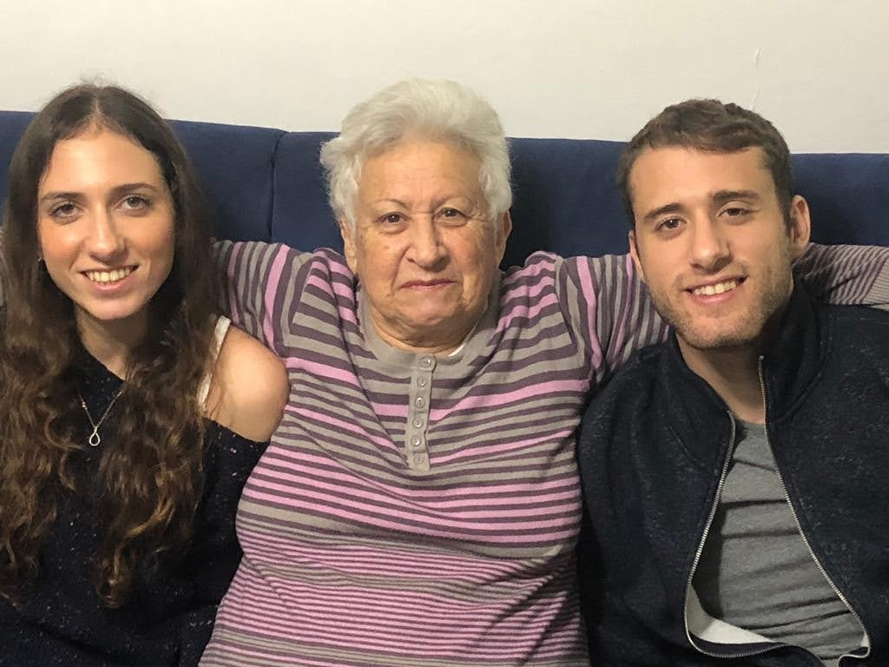
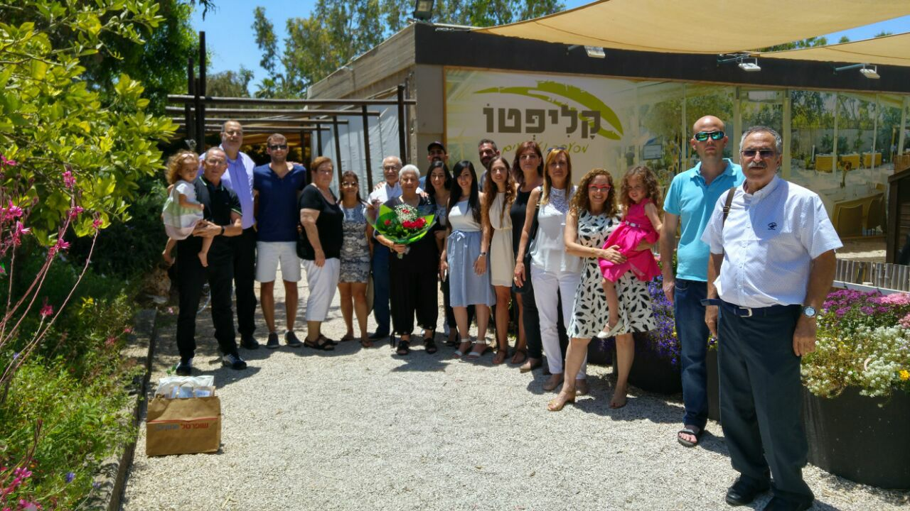
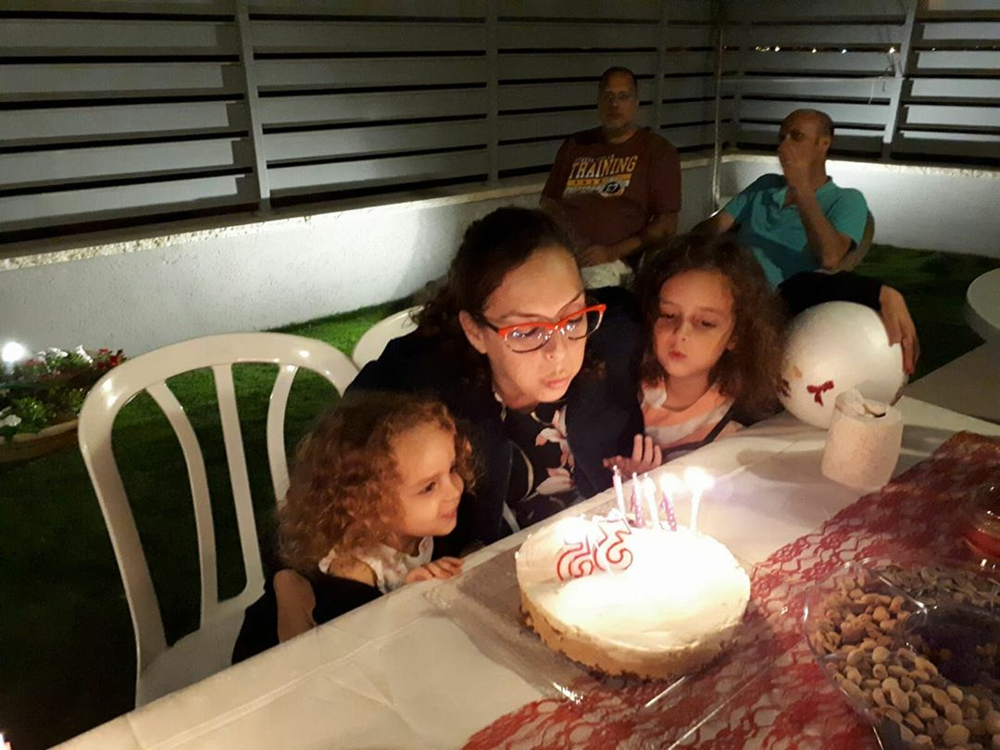
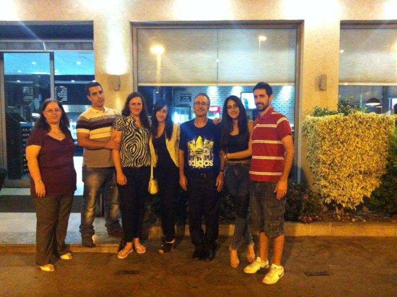
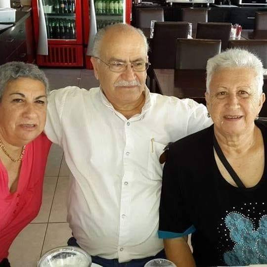
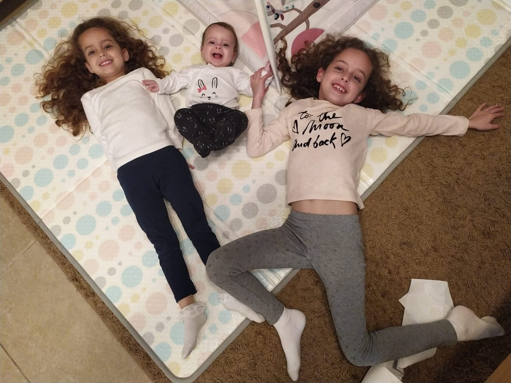
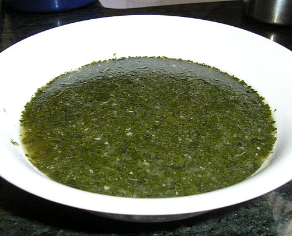
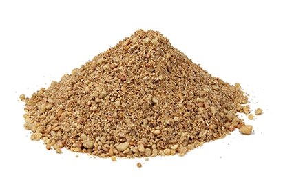

אבי - אשתו זיווה, וארבעת ילדיו רותם, יניב ושתי התאומות סתיו ואור.
אתי - בעלה יונתן ושני ילידהם סיוון ועידן.
ניסים - אשתו דליה ושני התאומים רועי ושיר.
סבתא נעמי אוהבת מאוד לטייל בחוץ ולהתרוצץ ממקומם למקום.
סבתא נעמי אוהבת לבשל, ותמיד שאחד מהנכדים מגיע היא מכינה בדיוק מה שהוא אוהב לאכול.
סבתא נעמי מאוד פעילה ברשתות החברתותיות היא יודעת לעשות לייק, להגיב ולשתף סרטונים. היא תמיד אומרת שהייתה צריכה להיוולד בדור של היום כי העולם התפתח מאוד. 
התמונות שלי


 

האוכל האהוב על משפחת כהן
משפחתן כהן הינה ממוצא מצרי ומעטים האנשים שמכירים את האכול המצרי.
הנה מספר מתכונים שמייצגים את האוכל המצרי:
מלוחייה: למי שלא מכיר מלוחייה נראת כמו ביצה ירוקה ודי מרתיעה אך יש למלוחייה טעם מיוחד.
הכנת מלוחיה נחשבת לעבודה לא פשוטה כלל שכן יש למצוא עלים מיוחדים להכנת המלוחייה ולנקות אותם.
נהוג לאכול מלוחייה בתוספת עם אורז חם 🍚 🍚 🍚

דואה: תערובת תבלינים מאוד מוכרת במטבח המצרי. ניתן להוסיף את התערובת לכל סוגי האוכל למשל: חביתה, גבינות, אורז.
בכל מטבח מצרי מכינים את התערובת בצורה שונה אך המרכיב המרכזי של הדואה הינו זרעי כוסברה.
התערובת הינה עשירה בטעמיפ ומאוד בריאה.

שירים אהובים
סבתא נעמי מאוד אוהבת סדרות בטורקית אז הינה פלייליסט קצר מיוטיוב עם מספר שירים מסדרות בטוקרית. האזנה נעימה 🔊 🔊 🔊
give me a like
💗 💗 💗
scan my code
שאלות ותשובות
שאלה מספר 1: פרט שלושה הבדלים עיקריים שקיימים לדעתך בין web1, web2, web3תשובה לשאלה מספר 1: אבחר להציג את ההבדלים בטבלה:
| הבדלים בין דורות שונים של web | |||
|---|---|---|---|
| דור | אינטארקציה | מי מפרסם תוכן | מספר משתמשים |
| web 1.0 | לקריאה | חברות מפרסמות תוכן שאנשים צורכים | מיליון משתמשים |
| web 2.0 | לקריאה וכתיבה | אנשים מפרסמים תוכן שאנשים אחרים יכולים לצרוך, חברות בונות פלטפורמות שמאפשרות לאנשים לפרסם תוכן בשביל אנשים אחרים למשל יו-טיוב, ויקיפדיה. | ביליון משתמשים |
| web 3.0 | קריאה, כתיבה ו-execute web | אנשים מפרסמים תוכן שאנשים אחרים יכולים לצרוך, חברות בונות פלטפורמות שמאפשרות לאנשים לפרסם תוכן בשביל אנשים אחרים למשל יו-טיוב, ויקיפדיה. | טריליון משתמשים |
שאלה מספר 2: כיצד חיפוש השאילתא "תופעות לוואי בתרופות" יהיה שונה בין web1 לבין web3?
תשובה לשאלה מספר 2:
ב-web1 החיפוש הוא מהיר מאוד אבל, הרבה פעמים התוצאות לא מדויקות ומכילות תוכן רב כך שאנשים יתקשו למצוא את התשובה הרצויה עבורם.
ב-web3 ניתן יהיה לתייג ביליוני תכנים כך שהחיפוש יוכל לאחזר יותר מידע. כתוצאה מכך, החיפוש יותר מדויק כיוון שתיוג יכול לפתור חלק מהדו-משמעות שצירופים ומילים נרדפות מייצרות בתוך תהליך החיפוש.
כתוצאה מכך, נוכל להקליד את השאילתא "תופעות לוואי בתרופות" ולקבל תכנים העונים לשאילתא הנ"ל בדיוק לאור העובדה כי התוכן תויג בתהליך מקדים.
המידע לקוח מתוך המאמר Incremental Journey for World Wide Web: Introduced with Web 1.0 to Recent Web 5.0 – A Survey Paper Karan Patel